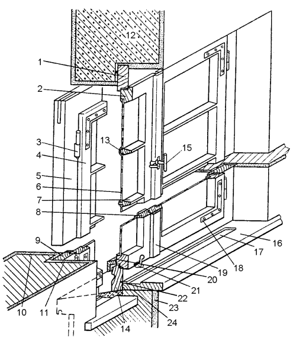

Деревянные окна.

Достоинства деревянных окон.Деревянные окна обладают хорошими тепло– и звукозащитными свойствами. Существенным преимуществом окон из дерева является возможность их ремонта своими руками.
Достоинствами окон из натуральной древесины являются:
• высокая прочность древесины при небольшой объ ем ной мас се, что обеспечивает высокий коэффициент конструктивного качества;
• высокая морозоустойчивость, что в нашем российском климате немаловажно;
• легкость в обработке;
• экологическая чистота;
• привлекательный внешний вид натурального материала.
К недостаткам деревянных окон относятся:
• наличие в древесине пороков (трещин, сучков, смоляных карманов, сини и так далее);
• подверженность гниению и поражению микроорганизмами;
• гигроскопичность (зависимость технических характеристик древесины от влажности);
• горючесть;
• необходимость в периодическом уходе.
Выбор деревянного окнаДеревянные оконные рамы нового поколения в основном делаются из сосны, дуба, бука, ореха, красного дерева. Красное дерево (махагон) является лучшим деревом для производства оконных рам, так как хорошо обрабатывается, позволяет делать точную подгонку деталей и почти не дает со временем усадки.
Внимание
Древесина обрабатывается специальной защитной пропиткой от влаги, жучков-древоточцев и воздействия солнца. Рамы из ценных пород дерева самые дорогие, но есть более дешевый вариант: сосна с покрытием под дуб, бук или орех.
На сегодняшний день на российском рынке представлены деревянные окна как отечественного, так и зарубежного производства. Высокая цена окон из-за рубежа определяется в основном тем, что по технологии производства оконные блоки могут поставляться только в готовом виде.
Существует три условных группы, на которые можно поделить окна из дерева, существующие на нашем рынке:
• зарубежные готовые окна, ввозимые из Финляндии, Швеции, Германии, Италии и других стран. Они отличаются высоким качеством и относительно высокой ценой;
• окна, производимые на российских или совместных предприятиях при использовании импортного оборудования и иностранных технологий. Их качество достаточно высокое, при применении более дешевых технологий обработки и покраски древесины цены становятся средними;
• отечественные окна, изготавливаемые на российских производствах. Если при их производстве используется морально устаревшее оборудование, то качество и цена могут быть очень низкими.
Окна играют важную роль, как во внешнем облике здания, так и в интерьере его внутренних помещений, поэтому одним из главных критериев, определяющих класс деревянного окна, является эстетика восприятия.
Красота, чистота обработки поверхностей, изящество профилей, цветовые нюансы различных пород древесины имеют большое значение при выборе окна. Только высокие технологии позволяют добиться высокого качества обработки поверхностей, придания сложных форм профилям и т. и., а использование современных технологий при производстве окон – гарантия высокого качества в целом. Притом, что хорошее деревянное окно может при правильной эксплуатации прослужить 50 лет и более, стоит задуматься о правильном вложении средств.
Качественное деревянное окно:
• изготовлено из качественной древесины, высушенной до необходимой влажности, с соблюдением необходимой технологии сушки;
• древесина обработана современными материалами по современной технологии;
• окно окрашено по современной технологии современными материалами;
• как отдельные части окна, так и окно в целом должно быть современной конструкции;
• в конструкции окна должны быть применены высококачественные комплектующие – стекла/ стеклопакеты, фурнитура, уплотнители и т. д.
Конструкции деревянных оконПо конструкции деревянные окна делятся на:
• окна с одинарными створками;
• окна со спаренными створками;
• окна с раздельными створками;
• окна с раздельно-спаренными створками (комбинированные).
Окна с одинарными створками. Наряду с возможностью установки обычного стекла теперь появилась возможность устанавливать однокамерный или двухкамерный стеклопакет.
Стеклопакет также может иметь различную конструкцию, быть заполненным специальными газами (аргоном, криптоном и др.), а также оснащаться специальными стеклами.
Окна со спаренными створками. Оконный блок состоит из наружных и внутренних створок, спаренных между собой. При этом внутренняя створка навешивается на коробку. Створки соединяются между собой при помощи стяжек и, таким образом составляют как бы один переплет, имеющий высокую жесткость. Внутренние и наружные створки имеют возможность разъединения, что создает удобство мытья стекол. В качестве остекления устанавливают или два обычных стекла или стекло внутренней створки заменяется на стеклопакет.

Рис. 11. Двустворчатое окно со шпингалетом, врезными петлями и угольниками:
1 – верхний горизонтальный брусок коробки; 2 – верхний горизонтальный брусок створки; 3 – врезная петля; 4 – вертикальный петлевой брусок створки: 5 – вертикальный брусок коробки; 6 – оконное стекло толщиной 2 мм; 7 – горбылек с фаской; 8 – притворный брусок створки; 9 – упор в стене; 10 – наружный проем: 11 – внутренний проем; 12 – оконная перемычка; 13 – фальц для остекления: 14 – нижний горизонтальный брусок коробки; 15 – шпингалет; 16 – подоконная доска; 17 – водоотлив: 18 – угольники; 19 – нащельник; 20 – отлив; 21 – защелка; 22 – паз для подоконной доски: 23 – внутренняя штукатурка; 24 – подоконник
На заметку
Открывание окон с одинарными и спаренными створками с помощью современной фурнитуры может быть любым: поворотным, откидным с верхним или нижним подвесом, поворотно-откидным (комбинированным), вращающимся или раздвижным. Причем в одной коробке возможна установка створок с различными способами открывания. Наиболее часто применяется при двухстворчатом окне с фрамугой поворотное открывание одной створки, поворотно-откидное другой и откидное открывание фрамуги с нижним подвесом. Вращающиеся створки позволяют поворачивать их на 180°,что облегчает уход за ними.
Окна с раздельными створками.Такие окна состоят из коробки и створок, которые закрепляются в коробке на некотором расстоянии. Применяется остекление двумя стеклами или стекло + стеклопакет. Между раздельными створками можно устанавливать жалюзи, при этом ручка управления будет находиться внутри помещения; или возможно применение дистанционного способа управления (для высоких фрамуг).
Внимание
В современных раздельных окнах фурнитура позволяет открывать обе створки одной ручкой. Но возможности открывания в подобных конструкциях ограничены, а поворотно-откидной способ невозможен из-за большой ширины оконной коробки.
Комбинированные оконные конструкции.Окна такого типа состоят из раздельно-спаренных створок, причем, наружная створка одинарная, а внутренние – спаренные.
Совет
Защитные жалюзи, москитные сетки и навесные ставни легко монтируются в любые конструкции деревянных окон.
Створчатые окна любой из выше перечисленных конструкций состоят из раздельной оконной коробки и створного оконного переплета.
Раздельная коробка окнажестко связана со стеной здания, к ней подвижно устанавливают створный оконный переплет.
Коробка включает в себя:
• вертикальную обвязку раздельной коробки окна;
• верхнюю обвязку раздельной коробки окна;
• нижнюю обвязку раздельной коробки;
• стойку или средник окна – вертикальный элемент для соединения раздельной коробки по ширине;
• ригель или импост – поперечный элемент для соединения раздельной коробки по высоте.
Створный оконный переплет– элемент окна, подвижно связанный с раздельной коробкой или с другим створным переплетом.
Он состоит из:
• вертикальной обвязки створки – верхней обвязки створки;
• нижней обвязки створки, например, брусок– отлив;
• горбылька переплета – фасонного горизонтального бруска для соединения створного переплета.
В конструкциях деревянных окон важно учитывать следующие специфические особенности:
• узкие вертикальные профили способны лучше воспринимать нагрузки со стороны остекления и одновременно позволяют минимизировать воздействие влаги на деревянные поперечные детали;
• профиль должен быть достаточно скошенным (минимум на 18") для того, чтобы дождевая вода быстро отводилась с несущей наибольшую нагрузку нижней части оконной рамы;
• все подвергающиеся воздействию влаги детали окна, например, нащельные ветрозащитные планки, должны легко заменяться;
• чтобы обеспечить качественное нанесение и удержание лакокрасочного покрытия, все наружные кромки должны быть выполнены с округлением (радиус минимум 4 мм).
Требования к конструкции деревянных оконТребование
Не рекомендуется пользоваться темными лакокрасочными покрытиями, так как они сильно нагреваются в теплое время года, в результате чего может по трескаться лак и выступить смола.
Окна и балконные двери должны изготовляться в соответствии с требованиями ГОСТ 23166 и настоящего стандарта по рабочим чертежам, утвержденным в установленном порядке.
Конструкция, форма, основные размеры и марки окон и балконных дверей типа С для жилых зданий должны соответствовать стандарту и рабочим чертежам.
Размеры на общих видах окон и балконных дверей даны в свету по наружным сторонам створок, фрамуг, форточек, полотен дверей и по наружным сторонам коробок.
Для отвода дождевой воды в нижних брусках коробок и в горизонтальных импостах окон и балконных дверей типа С делают прорези шириной 12 мм, а в окнах и балконных дверях типа Р сверлят отверстия диаметром 10 мм, располагаемые под широкими створками, полотнами балконных дверей и фрамугами на расстоянии 50 мм от вертикальных брусков коробок и импостов, а под форточными и узкими створками – одну прорезь или одно отверстие на середине.
Наружные створки окон и полотна балконных дверей типа Р должны быть навешены на врезные петли с вынимающимися стержнями по ГОСТ 5088. Внутренние створки окон типа С высотой более 1400 мм и шириной более 600 мм, а также высотой более 1000 мм и шириной более 900 мм должны быть навешены на три петли.
Для остекления окон и балконных дверей жилых зданий следует применять стекло толщиной 2,53 мм по ГОСТ 111, а для общественных зданий толщиной 3–4 мм. Толщину стекла уточняют в проекте и при заказе изделий с учетом ветровых нагрузок и шумовых воздействий в районе строительства.
Места расположения уплотняющих пенополиуретановых прокладок по ГОСТ 10174 в притворах окон и балконных дверей указаны на чертежах сечений.
По требованию потребителей по периметру оконных и дверных коробок на торцевых и боковых поверхностях допускается устройство продольных пазов различного профиля, заполняемых вкладышами и обрамляемых наличниками при соединении блоков друг с другом.
В жилых и общественных зданиях для климатических районов, где по теплотехническим расчетам не требуются окна и балконные двери с двойным остеклением, а также в неотапливаемых зданиях и помещениях должны применяться только наружные элементы окон и балконных дверей типа Р, при этом толщина бруска коробки должна быть не менее 54 мм, а размеры сечений устанавливают в рабочих чертежах.
Для обеспечения возможности оснащения окон и балконных дверей общественных зданий фрамужными приборами рычажного типа допускается увеличивать толщину верхних и вертикальных брусков коробок и импостов на 20 мм без изменения габаритов изделий.
По согласованию изготовителя с потребителем допускается изготовление балконных дверей высотой 28 модулей с фрамугами в отдельных коробках. В этом случае высоту глухой части полотен или остекленной части фрамуг уменьшают на 50 мм.
По согласованию изготовителя с потребителем допускается изготовление окон типа С высотой 6 и 9 модулей, предназначенных для лестничных клеток, без импоста с навеской створки на нижней горизонтальной оси с обязательной установкой ограничителей открывания.